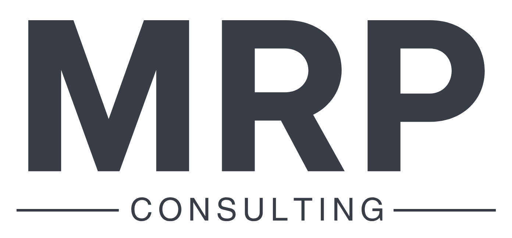

Une communication claire, un leadership affirmé
Je suis un consultant britannique en
communication d’entreprise et en
management, avec plus de 20 ans
d’expérience dans le monde de l’entreprise.
Aujourd’hui basé à Lyon, je travaille avec des
entreprises locales et à distance, en les aidant
à communiquer et à collaborer avec
assurance avec des clients, partenaires et
parties prenantes anglophones.
Après plus de deux décennies passées dans le
monde de l’entreprise — en tant que
développeur logiciel, responsable d’équipes IT
et coordinateur de projets transversaux — j’ai
compris à quel point une communication claire
est essentielle pour que tout fonctionne
efficacement. Au fil du temps, j’ai constaté que
les malentendus entre services, parties
prenantes et équipes projets — en particulier
lorsqu’ils impliquaient des personnes de
cultures ou de pays différents — entraînaient
souvent des retards, des erreurs et un travail
inutile.
Ce qui m’a le plus frappé, c’est à quel point les
barrières linguistiques, même entre personnes
parlant couramment l’anglais, pouvaient
ralentir les échanges de manière involontaire.
Pour les non-anglophones en particulier, ces
écarts créaient de la frustration, du gaspillage
de ressources, et compliquaient l’alignement
autour des objectifs communs.
De cette expérience, j’ai tiré des stratégies
pratiques pour aider les équipes à mieux
communiquer — notamment celles dont
l’anglais n’est pas la langue maternelle. Mon
objectif est de faire en sorte que chacun se
sente écouté, compris et confiant dans ce qu’il
fait. Quand la communication fonctionne, les
organisations constatent moins d’erreurs, une
progression plus rapide et de meilleurs
résultats. Et cela rend le travail plus collaboratif
et moins stressant pour tout le monde.
Mon but ultime est de créer des
environnements où les gens peuvent
s’épanouir — où la clarté favorise l’efficacité, et
où le travail d’équipe devient gratifiant plutôt
que frustrant. Il ne s’agit pas seulement de
résoudre des problèmes, mais de construire
une culture fondée sur la connexion, le respect
et la réussite partagée.
Mon expertise couvre la communication claire,
la négociation et le leadership, ainsi que les
compétences interpersonnelles telles que le
développement de la confiance en soi, la
médiation et la résolution de conflits. Grâce à
ma solide expérience technique, je comprends
les défis et les contraintes auxquels sont
confrontées les équipes techniques, ce qui me
permet de faire le lien entre idées complexes et
messages clairs et convaincants.
Dans le monde de l’entreprise, j’ai souvent été
confronté à des situations sous haute pression
et j’ai vu à quel point cela pouvait impacter la
santé mentale de mes équipes. Cela m’a
poussé à développer mes propres systèmes
pour repérer les signes avant-coureurs et
mettre en place des stratégies concrètes avant
que les problèmes ne s’aggravent.
J’ai créé mon propre cabinet de conseil parce
que je suis passionné par l’idée d’aider les
entreprises à améliorer leur communication en
anglais, afin de travailler plus efficacement et
d’éviter les malentendus. Une communication
claire ne renforce pas seulement la
productivité ; elle réduit aussi le stress, la
surcharge de travail et les problèmes de santé
mentale qui découlent souvent de mauvaises
pratiques professionnelles. Mon objectif est de
soutenir à la fois l’entreprise et ses
collaborateurs en créant des environnements
de travail plus sains et plus efficaces.
Contact
Si vous pensez que mes services peuvent bénéficier à votre entreprise, contactez-moi et rencontrons-nous